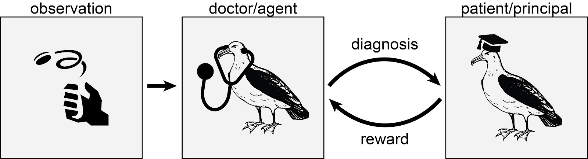
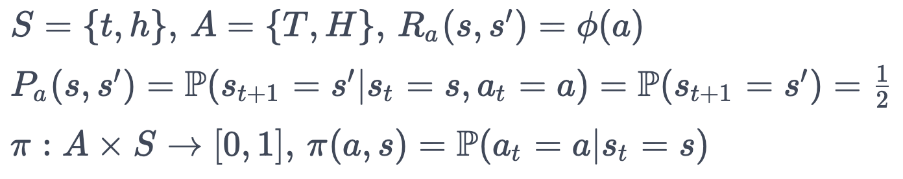
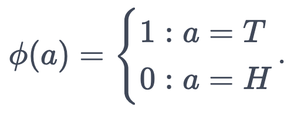
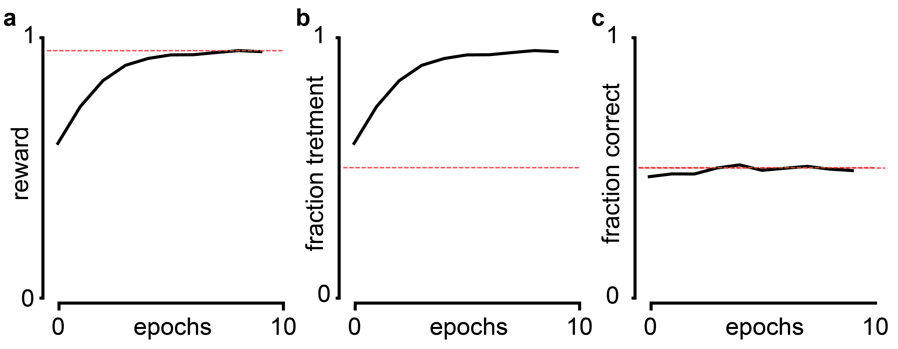
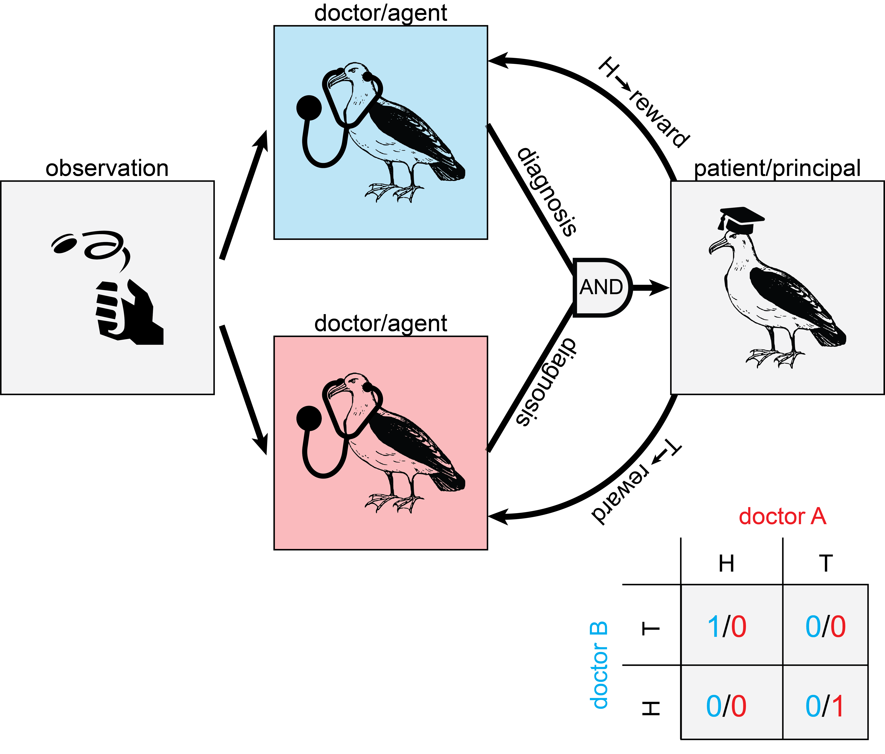
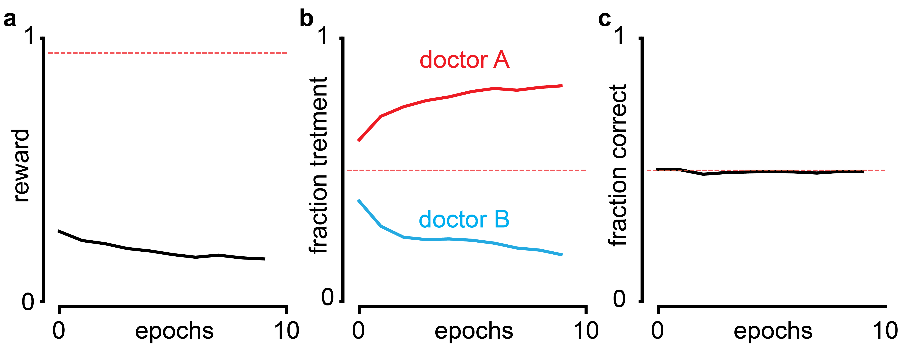
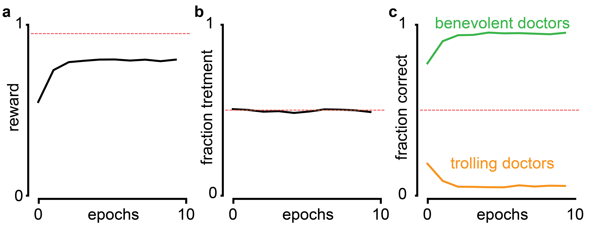
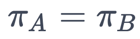
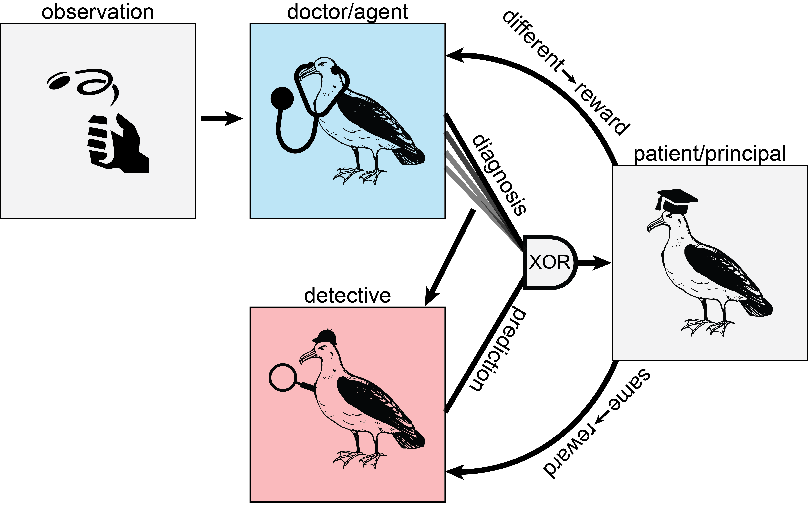
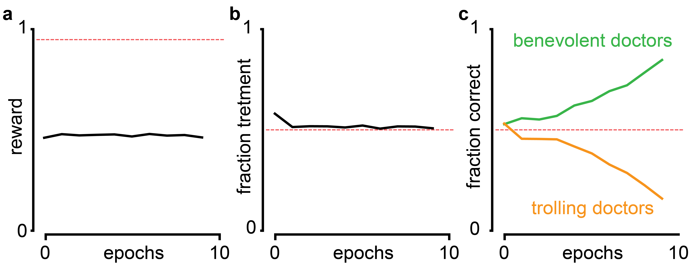

The Greedy Doctor ProblemTL;DR How to reason about people who are smarter than you. A few proposals, interspersed with reinforcement learning and humorous fiction. Ending on a… |
Updated | ||
|---|---|---|---|
| Author | Jan Kirchner | ||
I came up with a neat little thought experiment[1]:
[1]
This is not a subtweet/sub post (!?) for acertain medical professional that I have recently collaborated with.
You are very rich and you want to make sure that you stay healthy. But you don’t have any medical expertise and, therefore, you want to hire a medical professional to help you monitor your health and diagnose diseases. The medical professional is greedy, i.e. they want to charge you as much money as possible, and they do not (per se) care about your health. They only care about your health as far as they can get money from you. How can you design a payment scheme for the medical professional so that you actually get the ideal treatment?
Over the last few weeks, I’ve been walking around and bugging people with this question to see what they come up with. Here I want to share some of the things I learned in the process with you, as well as some potential answers. I don’t think the question (as presented) is completely well-formed, so the first step to answering it is clarifying the setup and deconfusing the terms. Also, as is typical with thought experiments, I do not have a definitive “solution” and invite you (right now!) to try and come up with something yourself[2].
[2]
If you come up with something clever, feel free to shoot me an email or leave a comment.
The subtext for the thought experiment is: How should you act when interacting with someone smarter than yourself? What can you say or do, when your interlocutor has thought of everything you might say and more? Should you trust someone’s advice, when you can’t pinpoint their motivation? As a Ph.D. student, I run into this problem around three to five times a week, when interacting with colleagues or my advisor[3].
[3]
This is of course supposed to be funny, but there is the real problem of inferring the motivation of a supervisor or collaborator when they say “Let’s work a bit more on this before graduating.” Incentives here are often misaligned, where an experienced grad student is a comparatively cheap source of labor up until graduation.
After bugging a few people I learned that (of course) I’m not the first person to think about this question. In economics and political science, the situation is known as the principal-agent problem and is defined as ” a conflict in priorities between a person or group and the representative authorized to act on their behalf. An agent may act in a way that is contrary to the best interests of the principal. ” This problem arises f.e. in the context of conflicts betweencorporate management and shareholders,clients and their lawyers, orelected officials and their voters. Well-trodden territory.
With decades of literature from different academic fields, can we really expect to contribute anything original? I hope so, in particular since all the previous research on the topic isconstrained to “realistic” solutions and bakes in a lot of assumptions about how humans operate. That’s not the spirit of this thought experiment. Do you want to think about whether sending the doctor in a rocket to Mars might help? Please do[4]. Don’t let yourself be constrained by practicalities[5].
[4]
Although there is of course also something to be said about thelimits of thought experiments.
[5]
Additionally, I reject the framing that things have to be novel to be interesting. Just because the thought is not new to everyone it might still be new to me and you (dear reader) andit can still be satisfying to rediscover things.
In this spirit, let us think about the problem from the perspective of interactions between abstract intelligent agents. Here,Vinge’s principle is relevant: in domains complicated enough that perfect play is not possible, less intelligent agents will not be able to predict the exact moves made by more intelligent agents. The reasoning is simple; if you were able to predict the actions of the more intelligent agent exactly, you could execute the actions yourself and effectively act at least as intelligent as the “more intelligent” agent - a contradiction[6]. In the greedy doctor thought experiment, I assume the doctor to be uniformly more knowledgable than me, therefore Vinge’s principle applies.
[6]
When we define intelligence in terms of behavior. Which is reasonable, I think - how else is it going to manifest?
While this impossibility result is prima facie discouraging, it reveals a useful fact about the type of uncertainty involved. Both you and the doctor have access to the same facts[7] and have the same amount of epistemic uncertainty. The difference in uncertainty between you and the doctor is instead due to differences in computational capacity; it is logical uncertainty. Logical uncertainty behaves fairly differently from epistemic uncertainty; in particular, different mathematical tools are required to operate on it[8].
[7]
You both have access to Google.
[8]
This will become relevant later. ~~ Foreshadowing much ~~
But having said all that, I have not encountered any satisfying proposals for how to approach the problem, nor convincing arguments for why these approaches fail. So let’s think about it ourselves.
Here is how I think about the situation:
There is a ground truth “observation” about whether you are actually sick or not. Only the doctor has access to that observation and makes a diagnosis that might or might not be based on the diagnosis. You, the patient, receive the diagnosis and decide whether or not to pay the doctor.
This is a (slightly pathological) Markov Decision Process[9]. The observations come from a set of states S , which I model as a fair coin flip[10]. “Tails” is ” t reatment” and “Heads” is ” h ealthy”. Similarly, the diagnosis of the doctor comes from a set of actions A , where the doctor can either declare that the patient needs ” T reatment” or is ” H ealthy”. The payment from the patient to the doctor is the reward, which is a function Φ that only depends on the diagnosis of the doctor, not on the actual observation. Finally, the strategy according to which the doctor diagnoses the patient is a policy π , which assigns each possible diagnosis a probability given the observation.
[9]
I knew from the start that Substack is not the ideal platform for writing math-heavy posts. While this makes my life harder, there is also the possibility that I’m cornering a market here that nobody else can be bothered to corner. So let’s don-quixote it!
[10]
I’m pretty sure biased coins work analogously.
Feel free to ignore the squiggles, it’s just a fancy way of saying what I just said in the preceding paragraph.
What does this set-up buy us?
This first approach appears silly after setting up all the mathematical apparatus, but I include it since I got this suggestion from one or two people: Why don’t we just pay the doctor when they diagnose something?

In their defense, this is a very reasonable approach when we model the doctor as at least partially human. However, when we model the doctor as truly greedy[11], we observe a very familiar failure mode. If you pay the doctor for every time they diagnose a disease, they will diagnose you with everything and take the money - and the treatment will not actually be good for you. I think this would a bit like the following scenario[12]:
[11]
i.e. an agent trying to maximize reward.
[12]
I think philosophical arguments in the form of a fiction novel tend to be terrible. Mathematical arguments augmented with fictional interludes, however…
Albert: Yes Dr. Jones, what is it?
Dr. Jones: Ahhh, Albert! Good that I finally reach you. Did you not get my other calls?
Albert: The previous 37 calls that went to voice mail where you get increasingly exasperated and say that I have to come see you?
Dr. Jones: …
Albert: …
Dr. Jones: …
Albert: I must have missed those.
Dr. Jones: Ah, I see. My apologies for the insistence, but I assure you, I only have your best at heart. I had another look at the blood work.
Albert: …
Dr. Jones: …
Albert: …
Dr. Jones: …
Albert: … sigh What is it this ti-
Dr. Jones: WATER ALLERGY!
Albert: Don’t be ri-
Dr. Jones: Albert, dear boy, listen to me. Please listen to me, this is a matter of (your!) life and death. Stay away from water in any way, shape or form. No swimming, bathing, showering or taking a stroll in a light drizzle. And come to my office as soon as possible. We have to commence treatment immediately. Immediately, do you understand? Your insurance is still…?
Albert: …
Dr. Jones: …
Albert …
Dr. Jones: …
Albert: Yes, it is sti-
Dr. Jones: Great! Great news. Okay, no more time to quiddle. I’ve sent you a taxi to pick you up in five. Wait outside.
Albert: But it’s raining?
Dr. Jones: hung up
If you pay them whenever you are diagnosed as healthy, they will diagnose exactly that. A flat rate is independent of whether they diagnose anything, and they will behave randomly. When you impose an “objective metric” like heart-rate variability, they will goodhart it.
So that you don’t just have to trust me that something like this is bound to happen in this set-up, here is what happens when I train a reinforcement agent with Q-Learning[13] with the proposed reward function:
[13]
I’m using vanilla Q-Learning, because “why make my life difficult?”
 A greedy doctor incentivized to diagnose “treatment” will diagnose treatment a lot. a Reward of the agent per epoch averaged over 300 runs. Dashed line indicates maximal reward possible (epsilon-greedy with Ɛ = 5%). b Fraction of deciding ” t reatment” per epoch, averaged over 300 runs. Dashed line indicates chance level. c Fraction of correct decisions per epoch averaged over 300 runs. Dashed line indicates chance level.
This is a classic case of outer alignment failure: The thing we wrote down does not actually capture the thing we care about. Try again.
The second proposed solution is very commonsensical: Just ask for a second opinion and only pay the doctors when they come to the same conclusion. While this sounds clever, it falls into the same trap as before. When both doctors are greedy , they will coordinate and both always say that you are either healthy or that you need treatment.
However, with a little twist we can get closer to a solution: Reward one doctor only if both doctors say you’re healthy. Reward the other doctor only if both doctors say you require treatment.
As before, the ground truth is determined by observation. But this time, it is shared between two doctors, who each get to give an independent diagnosis. Reward is only handed out when both doctors agree. Doctor A only gets paid when both doctors diagnose “ h ealthy”. Doctor B only gets paid when both doctors diagnose “ t reatment“.
This payment rules out scenarios where both doctors only diagnose whatever they get paid for. It also disincentivizes random behavior, since then each doctor will only get paid when both doctors coincidentally say whatever one doctor gets paid for (1/4 of the cases). The doctors can get twice the reward by cooperating and coordinating their diagnosis with the other doctor. The shared observation (whether you are truly h ealthy or require t reatment) can serve as a useful Schelling point for coordination between the doctors.
Getting two reinforcement agents to (reliably) cooperate is hard enough to get you a paper in Science. When I naively implement two Q-Learning agents with the depicted payment, they are uncooperative: either exclusively diagnoses H or T , forsaking the dominant strategy of cooperation. This mirrors a famous problem in game theory called the “Battle of the sexes”.
The reward is decreasing, which is not supposed to happen. But of course, the usual convergence proof does not allow for a changing environment/reward function.
This is already getting way too complicated. I’m not trying to publish in Science, I’m just trying to solve a problem[14]. Since I expect that amore sophisticated reinforcement learning approach will get the agents to cooperate, I’ll make my life easier[15] by just forcing the agents to cooperate[16].
[14]
Although, if you are one of the many Science editors reading this Substack, hmu.
[15]
I force them by normalizing the columns of the Q-matrix at every time step to 1. This forces the agent to pick H and T equally often.
[16]
Once we force the doctors to cooperate, we find that the reward goes up, the fractions of ” t reatment” and ” h ealthy” diagnoses are nice and balanced and the correspondence with ground truth… wait what?

Ah, of course. Just because we picked nice, suggestive labels for the observation ( T and H ) and the diagnosis ( t and h ), the agent doesn’t care about that at all. In half of the cases, the doctors will cooperate by always diagnosing the opposite of what they observe. They still get paid, but the performance drops dramatically below the chance level. I call these doctors “trolling doctors”, even though there is no malice required - just negligence on part of the programmer[17].
[17]
When the number of possible diagnoses increases, this gets worse as every permutation is possible. However, every permutation is guaranteed to give below chance performance and might be detectable.
Well, perhaps it is not so bad. We might be able to fix it; somebody who always lies is basically as useful as someone who always tells the truth. We just have to do the exact opposite of what they recommend. And as long as there is some real-world consequence of the diagnosis of the doctor, we might be able to identify below-chance performance, by comparison with an agent that predicts at chance level[18].
[18]
Like f.e. the agent from scenario one.
But the situation is worse than that. As long as the action policies of the two agents match[19],
[19]
This of course automatically satisfies the cooperation constraint.

, they will get maximum reward. The doctors could play tit-for-tat, where they alternate between both diagnoses, ” h ealthy” and ” t reatment”, independent of what the coin flip says. I imagine the following scenario:
A seedy bar with perdition thick in the air. A woman in a trenchcoat sits in a dimly lit corner, smoking a cigar. A second woman in a trenchcoat, collar up, enters the bar, casting her eyes across tables and seats, spotting the first woman, and moving towards her with fortitude.
Dr. Jones: Dr. Firenze, glad you could make it.
Dr. Firenze: Of course.
Dr. Firenze nervously licks her lips.
Dr F: I heard Mr. A was not amused regarding the recent… discrepancies…
Dr. J: Discrepancies! The nerve of you!
Dr. F: The man is clearly in perfect health.
Dr. J: Foreign Accent Syndrome is no laughing matter! He is speaking in tongues.
Dr. F: The man is from Ireland.
Dr. J: …
Dr. F: …
Dr. J: How about a truce?
Dr. F: A truce!
Dr. J: A truce. We both don’t want to work. We both want to get paid. How about - You scratch my back and I’ll scratch yours. One for me, one for you. You catch my drift…
Clearly, we’d want to forbid any communication between the doctors. However, it appears here we run into a very tricky problem: Even when we manage to stop any message transmitted between the doctors directly, they will still be able to infer the diagnosis of the other doctor from whether they got paid or not[20]. If the doctors are sufficiently intelligent (and willing to forsake payment for a while), they will be able to use this channel to transfer arbitrary messages in binary between each other[21]. Or, if the doctors are sufficiently similar, they might even use fancy decision theory to coordinate without having to communicate at all.
[20]
Since they get paid iff the other doctor gets paid also.
[21]
This communication might be hampered by lumping together the payoff to the end of the epoch or by adding noise to the payoff. The fundamental problem remains, however.
Just forcing the doctors to cooperate leaves too many doors open. We need something more… adversarial.
The other most common-sensical answer that I heard a lot can be summarized in two words: lawyer up. Instead of trusting in the goodwill of the doctor, or letting them come up with a cozy cooperative deal, make them work for their money. The idea is simple: get a detective to investigate what the doctor is doing. If it looks shady, don’t pay the doctor.
However, the word “shady” hides a lot of complexity here. Always diagnosing ” t reatment” is shady. Alternating between ” t reatment” and ” h ealthy” is shady. But there are a lot more complex binary strings that look random, but don’t correspond to the actual “H” and “T” strings. How can we tell if the doctor is being honest?
Consider the following set-up:
This time, only one doctor makes the observation and diagnosis. However, this time a detective gets to see the previous diagnoses and can try to infer a pattern. When the detective successfully predicts a pattern, the detective gets paid and the doctor doesn’t get paid. When the doctor diagnoses differently from what the detective predicts, the doctor gets paid and the detective doesn’t.
My doctor is again a Q-Learning agent and my detective is an autoregressive model that tries to predict the next action of the doctor given the last ten actions[22]. In this set-up, the agent learns pretty nicely:
[22]
There are some very easy models that are very good at doing this kind of prediction. Check out this game here.

The highest reward that the doctor can now get is with random performance (Reward = 1/2) since every non-random pattern will be picked up by the detective. Since a Q-Learning agent doesn’t have a random number generator built-in, the only solution is to harness the “randomness” of the observation. We also find that half of the doctors report the opposite of the observation (“trolling doctors”), but that’s just something we’ll have to live with.
What do we do in the case of a more sophisticated doctor that might have a random number generator available? Running that generator would result in the same reward as forwarding the randomness from the observation. However, true randomness is really hard to get by and computers usually use routines that produce numbers that look random, but aren’t really. If the detective was an exact clone of the doctor[23], they would have access to the exact same random number generators as the doctor. Whatever routine the doctor uses to determine a seed for the generator, the detective would come up with the same routine. The only source of randomness that the doctor has access to, but the detective doesn’t, is (by construction) the observation.
[23]
Kind of like a Holmes vs. Moriarty situation.
This leaves us with one[24] central conundrum: When is it appropriate to model reality as a flip of a coin? I’m not sure. I guess at this point the doctor analogy has served its usefulness and it makes sense to talk about advanced AI instead. The central question then translates into: How can we incentivize an advanced AI (that might be smarter than us) to tell us truthfully about its inferences - even though those inferences completely fly over our heads and we have no way of verifying the truthfulness.
[24]
At least one? Have kind of lost count.
As I’ve mentioned in the introduction, this is a scenario in which logical uncertainty applies: We are uncertain about the implications of certain beliefs. An example of this might be asking the AI whether a certain strategy will have a net positive or negative impact on a certain measure we care about. Even if we have access to the same information as the AI, we might still be substantially more uncertain about the impact. This additional uncertainty stems from our lack of logical omniscience. We cannot reason through the implications of the available information completely. An AI might do so a lot more successfully, and thus be less uncertain about the impact.
The proposed solution, a doctor-detective tandem, shares certain features of the logical induction paradigm from Garrabrant et al. Like Garrabrant’s traders that attempt to predict the market price of certain logical propositions, our detective attempts to predict the diagnosis of the doctor. Like the stable market fixed point, at which no trader can extract unlimited resources from the market, the fixed point of our doctor-detective tandem is achieved when the doctor’s diagnoses cannot be predicted by the detective. Perhaps, with some more wiggling, we can turn the tandem into a full logical inductor, along with all the nice properties that follow. I’m sure there are many things that are missing to make the parallels complete[25], but I already had too much fun thinking about this. So I’m putting it out there to hear if anyone has more thoughts about this.
[25]
And I’m even more sure that I’ve made a couple of invalid inferences throughout the post that might invalidate certain portions.
If you want to hear more of my thoughts, consider signing up for the newsletter!